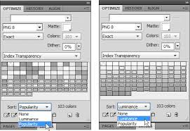

Taming your PNGs
The PNG format was created to improve upon the GIF, and it does in all aspects except maybe animation. So why do so many people still use GIF? While PNGs offer much higher quality graphics, a better feature set and more control regarding compression, if not harnessed correctly you may get smaller file sizes with a GIF, you may also run into PNG compatibility problems with some browsers. In this article I’m going explain some of the benefits of using PNGs and let you in on a few little known techniques to get the most out of them.
OK so PNG and GIF are really quite different. PNGs have 5 different pixel types to choose from.
- True colour with aplha
- Greyscale with alpha
- Truecolour
- Greyscale
- Indexed-colour
GIFs only come in indexed-colour.
Alpha channel transparency
PNG supports RGBA (true colour with alpha). Each pixel can be assigned a transparent value. For example R:0 G:0 B:0 A:127 would be black at 50% opacity. GIFs only support binary transparency where a pixel is either fully opaque or fully transparent. All you have to do is “save as” png from Photoshop or “save as” Flattened PNG from Fireworks.
PLEASE NOTE: The names of some of these image types can be a little confusing. While the specification says:
For PNG image types other than indexed-colour, the bit depth specifies the number of bits per sample, not the total number of bits per pixel.
and thats fine, however most software and users generally talk about the total number of bits per pixel. To confuse things further Photoshop calls RGBA PNGs 24 bit while Fireworks calls them 32 bit!
Internet Explorer 6
Unfortunately these days not many articles get by without the a section on how IE doesn’t play ball. This one is no different.
IE6 does not support the alpha-channel information in PNGs. While there are some ways to force it to work, I don’t recommend you use any of them.
IE Filters
IE filters have been around for a long time and allow you to create effects like transparency, shadows and gradients amongst other things. The problem, besides this being a non standard technique is that behind the scenes Internet Explorer uses DirectX to achieve these effects.
filter: progid:DXImageTransform.Microsoft.AlphaImageLoader(src="shadow.png", sizingMethod="crop");
- Filters use DirectX and will slow down the rendering of your page
- The AlphaImageLoader filter blocks rendering and freezes the browser while the image is being downloaded
- Filters increase memory consumption
- AlphaImageLoader is applied per element, not per image
- The AlphaImageLoader filter doesn’t support all the CSS properties
- Some corporations disable DirectX for security reasons
- Filters are a non standard technique
These other solutions described below are all variants that use the AlphaImageLoader filter in one way or another, JavaScript, Flash, PHP etc.
HTC behaviour files
These DHTML Behaviors (introduced in IE5.5) in the form of HTML Component (HTC) files simply use JavaScript to augment IE6 by mimicking some of the browsers missing functionality.
This may sound great, however it’s a well known fact that IE6s JavaScript rendering is uber slow. In this case all pngbehavior.htc does is use JavaScript to automate the use of IE filters. So you are still using DirectX. Also, with the dependency moderns sites have on JavaScript I don’t see any good reason to slow down rendering further with transparency hacks like this.
Flash
This Flash solution (Pngpong) uses Flash Player and JavaScript (SWFObject) to display transparent PNGs in IE6. Flash + JavaScript just to display 32-bit PNGs in IE6… no thanks, I’d rather degrade to a gif.
PHP
There are also many server side solutions out there, this one uses PHP and does pretty much the same thing as the HTC file but on the serverside.
Degrade for IE6 using Conditionals
To avoid using the resource hungry techniques described above, some people resort to serving a separate GIF for IE6 using conditionals. Read on to find out a better technique where we will use the same image for all browsers and no hacks.
IE7 and possibly IE8
While IE7+ has native support for PNG32 there is at least one problem with the implementation. When using opacity with variable transparency the transparent pixels turn black before the opacity is applied. While this definatly does suck, its a bit of an edge case.
8-bit PNG with Alpha transparency
A little known fact about PNGs is that Alpha Transparency is not limited to 32-bit versions. Support for 8-bit PNGs with Alpha Transparency in most graphics packages is either nonexistent or flaky, however it is possible, and the benefits are glorious.
Here are the two main reasons why this is a good thing:
- 8-bit PNGs are smaller than the 32-bit versions
- 8-bit PNGs with alpha transparency degrade gracefully in IE6
As described earlier, if you display a 32 bit PNG in IE6, IE will apply an opaque bluey grey background color to the image. With our 8-bit version any semi transparent pixels in the image will simply disappear!
Before explaining how to do this lets take some time to discuss the 8-bit PNG format. It is actually the indexed-colour PNG from the list we had previously. It can also be called palette colour as it uses a colour palette.
- True colour with aplha
- Greyscale with alpha
- Truecolour
- Greyscale
- Indexed-colour (palette colour)
For indexed-colour images, the bit depth specifies the number of bits in each palette index, not the sample depth of the colours in the palette or alpha table.
Indexed-colour
In the illustration above you can see that each pixle in the graphic gets assigned an index number, and that number relates to a colour in the palette. This is an 8 bit system therefor the index and palette are limited to a maximum of 256 values. However the colours in the palette can be 24 or 32 bit depending on if the optional alpha table is included.
How to create 8-bit PNGs with Alpha Transparency
Unfortunately Photoshop does not support variable transparency with the PNG8 format so i am going to use fireworks for this example. However you can download the pngout plugin for Photoshop that will allow you to do the same.
This first screen shot below shows the image preview dialogue from Fireworks, you can see that the image format is set to PNG8 but the transparency is set to index. This way you can only have one fully transparent pixel, just like a GIF.
In the next screenshot I have changed the transparency to Alpha Transparency, now in the image preview you can see straight through the graphic to the cavas behind. Also, have a look at the palette, there is a new colour chip type, the ones with the corner taken out of them are the semi transparent colours. The leftmost colour in the palette is still the fully transparent pixel as per above.
As i mentioned at the start of this article, support is still rarther flaky for the more advanced PNG options. If you look closely at the image you can see some banding, you may also have noticed that there are only 7 colours in the alpha transparent verison. A bug in Fireworks resets the palette to Adaptive whenever you select Alpha Transparency. This is only really a problem when you are using lots of pixels which are very similar, for example a gradient of the same colour. Dithering helps a bit but ends up unnecessarily increasing the filesize. If you really need to create a perfect quality gradient you can take a more manual approach.
Manually adding transparency to colours in the palette
To do this save out the graphic with the options from the first screenshot, index transparency and palette type exact (Fireworks users: don’t forget to save as a flattened PNG). Then go download tweakPNG.
When you open the graphic with tweakPNG you should see something like the following:
What you are seeing here is the PNG chunk data, don’t worry too much about that for now, we will talk about it in more detail later on. For now all we are interested in is the tRNS chunk. This controls the alpha table.
Double clicking on the tRNS chunk will open the images colour palette and allow you to edit the transparency information.
As you see there are 103 colours in the palette so this may take some time! However you can save out the data and use it on other images if you need to.
Depending on the level of transparency you are looking for you may need to do some math. For this example we want about 50% transparency. Having 103 shades in our palette we can pretty much start the most opaque colour at alpha 102 and work down to alpha 0, full transparency.
Here is the result:
 This image works on any background, it degrades in IE6 and we have solved the banding issue. Next lets look at compression.
This image works on any background, it degrades in IE6 and we have solved the banding issue. Next lets look at compression.
Compression
The original 32 bit image started off at 6kb. While this 8bit one is only 4k there is still lots more we can do. One obvious thing we should have done before editing the transparency is to reduce the number of colours.
In order to prevent banding we set the palette to “exact”, that gave us 103 colours. Lets reduce this number and look at some other compression techniques.
First open the graphic in Fireworks and select 2-Up mode
Go to the optimize panel and remove colours until you are happy with the balance between filesize and quality. Changing the sort between luminance and popularity helps you select colours that will have the least amount of visual impact when removed. You should be looking for the least popular colours that are similar to other colours in the palette.

Not wanting to delete too many similar colours i unselected a few before deleting the rest. I repeated this procedure until i had a good balance.
Now save out as as flattened png and create the tRNS chunk again using TweakPNG. We are now back at the stage we where before but we have reduced the image by a further 2k.
The final piece of compression we are going to look at is to remove any unnecessary PNG chunks.
Chunks
There are 18 chunk types defined in the PNG Specification, 4 of them a critical chunks.
- IHDR: PNG image header
- PLTE: palette table, only for indexed PNGs
- IDAT: PNG image data
- IEND: end of image marker
You can identifiy the critical chunks easily as they are all in full caps.
There are 14 other optional chunk types:
- tRNS: Transparency information
- cHRM, gAMA, iCCP, sBIT, sRGB: Colour space information
- iTXt, tEXt, zTXt: Textual information
- bKGD, hIST, pHYs, sPLT: Miscellaneous information
- tIME: Time information
By removing all but the critial and transparency chunks we can further compress our image.
Lucky for us there are very easy ways to do this. We can either use TweakPNG to manually choose what chunks we want to remove, or you can download PNGOUT and have it batch crush multiple PNGs at once.
I have found PNGOUT to be the best compression tool for PNGs. It comes as either a free command line utility or with a GUI for ~$14. Just drag and drop as many PNGs as you like into the UI and it will automatically compress them.
Dragging our image into PNGOUT and it removes all ancillary chunks except for the tRNS chunk.
This saves us a further 300 bytes.

The Results
Our image that started out as a 6kb 32bit png that didnt work in IE6 is now an 8bit graphic at 1.5kb that degrades gracefully in IE6.
6kb 32bit PNG

1.5k 8bit PNG

I thought id take a look at googles actual image for the infobox and see if I could compress it further.
Googles original file is 8,071 bytes (here is a saved copy). I managed to get it down to 3,966 bytes, a saving of over 50%, not bad.
Automaticaly converting 32bit pngs to 8bit
There is a quicker way of making 8bit pngs, and this way doesnt introduce banding. However you dont get fine control over the colours in the palette.
Create a 32bit png in photoshop (photoshop call them 24bit), and then convert it to an 8bit png with pngquant. Run command prompt and type “pngquant 256 filename.png” in the pngquant folder. The results are pretty good. Open the png with tweakPNG to investigate the tRNS chunk. Depending on your graphic, but you will have up to 256 colours in the pallet. With Fireworks we noticed that it sometimes reduced the number of colours in the palette creating an unwanted banding effect. In this case however we may not want this many colours and thus has an effect on filesize.
Asking pngquant to create the image with less colours would help but doesnt give you much control and could bring back the banding issue. One thing you could do is reduce the colours before running pngquant by posterizing the image slightly in photoshop first. At least this way we can see what we are doing instead of simply telling pngquant how many colours you want in the pallet.
More on Chunks
I was going to leave the article there, but i though it would be useful to talk about a couple of the other chunks. There are two others that i use quite often. The bKGD and gAMA chunks.
gAMA
Different platforms use different default gama settings. This means that if you create an image on a PC it will look brighter on a Mac, and images created on a Mac will look darker on a PC.
The problem is that your browser has no idea what gama setting your image was originally displayed at, and thus has no way of compensating for the differences between platforms.
The PNG gAMA chunk stores this information when the image is created. That way it can display the image perfectly on every platform.
Depending on your needs you may want to remove the gAMA chunk altogether. Take the following situation for example. If you create a PNG with a gAMA chunk, the image will look the same on both PC and MAC platforms, however if you have a CSS background of the same colour behind the image, the colours will look different. This is because the image is being corrected but the CSS colour isnt.
This is just an example, in this particular case you could of course just make the background of the image transparent.
bKGD
The bKGD chunk can be useful for changing the default fall back colour for 32 bit pngs. As mentioned earlier in this article, IE6 does not support 32 bit pngs and will automatically apply a bluey grey background colour to the graphics. Using the bKGD chunk you can change that background to any colour. This can be useful if you want a transparent background on an image that requires more than 256 colours. You can choose a background colour for the transparency to degrade to on E6.
End
I know the png8 format is fairly well known at this stage, what I wanted to do in this article is expand upon it, and explain some solutions to the bugs I have come up against over the years. I also wanted to share some learnings I have found from trying out various techniques and tools.
This is obviously a very large area to cover and so I’m already considering a part two to this article, that depends of course on how this one is received.


Great article! Thanks for taking the time. Programmers have asked me to convert our IU from 32Bit PNGs to 8bit PNGs so that they can change palette in realtime.
Can I ask a question? – Does using the PNGOUT plugin for Photoshop avoid the Fireworks banding?
I have 300 graphics to change and many are gradients of similar colours. The extra steps in tweakPNG seem like it would take too long.
Thanks!
Hi Alex, unfortunately it doesn’t . The only tool I have used that doesn’t automatically remove colours is pngquant. It supports batch processing too so would be great for your purposes! Someone has built a GUI for it too.
. The only tool I have used that doesn’t automatically remove colours is pngquant. It supports batch processing too so would be great for your purposes! Someone has built a GUI for it too.
http://www.libpng.org/pub/png/apps/pngquant.html
http://jedisthlm.com/2006/03/16/manfred-a-pngquant-gui/
Thanks for that – I was already looking into it. I can’t seem to find out whether you can select ‘no dithering’ in it though. I’m creating a GUI for consumer electronics and we make everything out of thin slices. Dithering usually looks becomes banding when slices are stretched.
Thanks again!
Alex
Sorry to clutter your article
I’ve just done a couple of tests and using the default command line text (pngquant 256 *.png) I can’t see any dithering – certainly nothing like the dithering that fireworks would normally apply. I’ll use this and then suply all the PNGs to the programmers for testing.
The resultant filesize isn’t any smaller than a 32bit PNG (compressed using PngOptimizer), but it may help the programmers change palettes in realtime.
Thanks for your help.
Hi Alex, I’m glad you found a good solution, I’ll just add you last comments in here as others may find it useful.